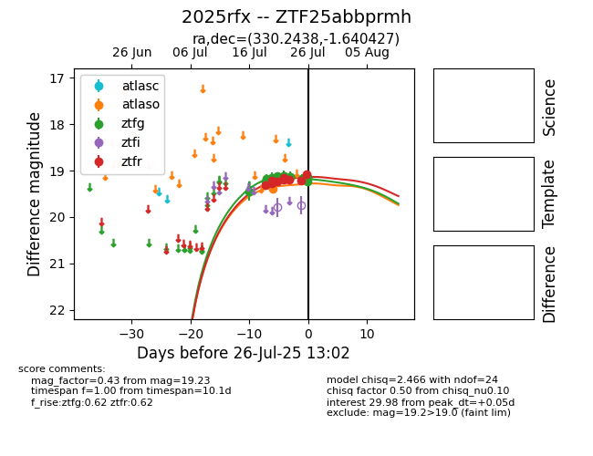

Target 2025rfx at 2025-07-26 13:02, see:
FINK: fink-portal.org/2025rfx
Lasair: lasair-ztf.lsst.ac.uk/objects/2025rfx
ALeRCE: alerce.online/object/2025rfx
TNS: wis-tns.org/object/2025rfx
YSE: ziggy.ucolick.org/yse/transient_detail/2025rfx
alt names
ZTF25abbprmh (ztf,fink)
2025rfx (tns,yse)
coordinates:
equatorial (ra, dec) = (330.2438,-1.64043)
galactic (l, b) = (57.5379,-41.89268)
photometry
last atlaso=19.40, ztfg=19.23, ztfr=19.09
1 atlaso, 17 ztfg, 9 ztfr detections
